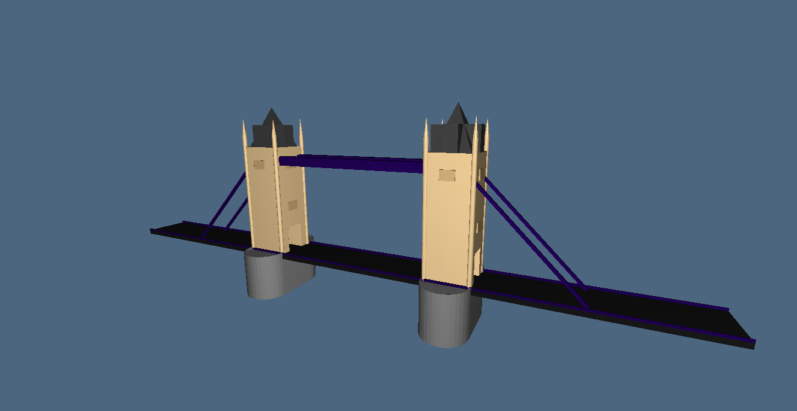
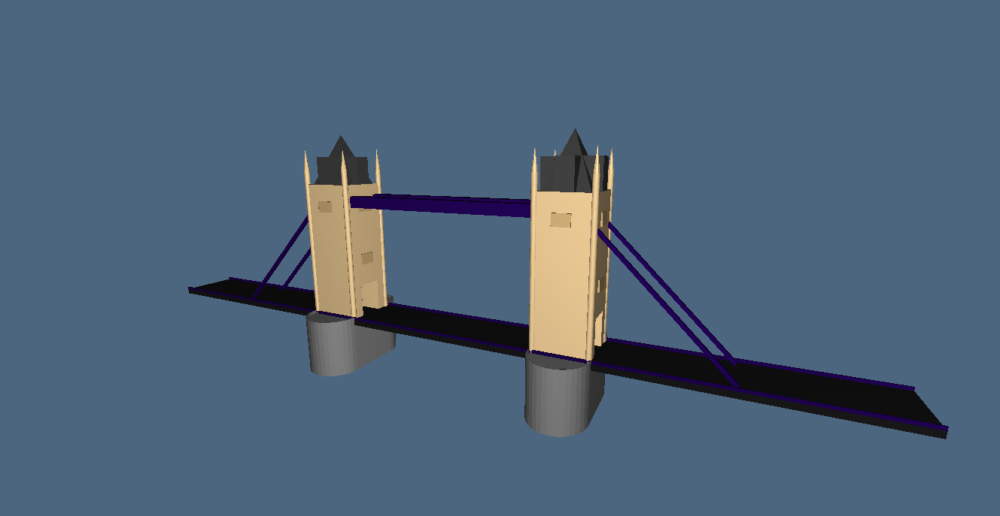

Building: Tower Bridge
Name: Alessandro
Surname: Del Duca
University ID: 427156
Documentation:
- plasm.net
- Computational Graphics 2014
- Tower Bridge Wikipedia page
Link to project:
- exercise1.py
- exercise2.py
- exercise3.py
Images:
 


 Description:
Per realizzare il progetto è stato realizzato inizialmente un disegno su carta millimetrata in vista superiore e laterale, sono state calcolate le misure al meglio dei dati trovati in rete. È stato successivamente realizzato un modello approssimativo con il software Sketchup per avere un'idea più immediata della realizzazione e di come procedere. Il livello di dettaglio è stato reso al massimo delle attuali capacità e del tempo a disposizione. Sono state utilizzate funzioni non ancora spiegate durante il corso, ottenute analizzando la libreria "fenvs.py" e la documentazione riportata in questa pagina.
Description:
Per realizzare il progetto è stato realizzato inizialmente un disegno su carta millimetrata in vista superiore e laterale, sono state calcolate le misure al meglio dei dati trovati in rete. È stato successivamente realizzato un modello approssimativo con il software Sketchup per avere un'idea più immediata della realizzazione e di come procedere. Il livello di dettaglio è stato reso al massimo delle attuali capacità e del tempo a disposizione. Sono state utilizzate funzioni non ancora spiegate durante il corso, ottenute analizzando la libreria "fenvs.py" e la documentazione riportata in questa pagina.